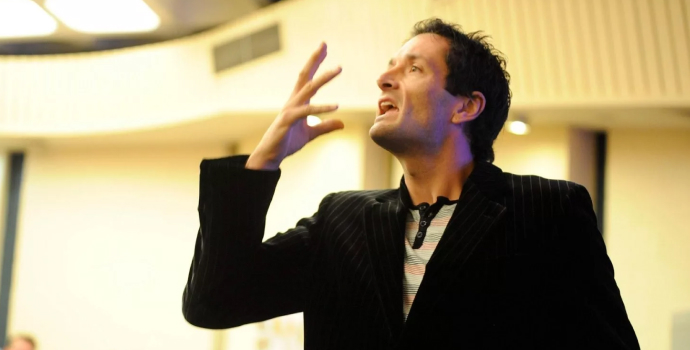

Ораторы древности не были рождены великими, но благодаря чтению трактатов по риторике и упорной работе над собой они знали, как научиться говорить красиво, и своими умениями завоевали всемирную славу и признание.
В наши дни не обязательно читать многотомные пособия, чтобы побороть страх перед публикой и обрести мастерство общения. Сегодня для этого достаточно пройти курсы ораторского мастерства в Киеве, и выучить несколько полезных лайфхаков по общению с людьми.
С чего начать?
Секретом успеха любого публичного выступления является уверенность оратора, ведь без нее любые, даже самые глубокие и верные мысли, будут звучать неубедительно. Есть несколько простых психологических трюков, которые помогут побороть свою неуверенность даже самым застенчивым людям и наконец-то научиться выражать свои мысли.
Первый и очень действенный метод называется «притворяйся, пока не получится». Его суть заключается в том, что перед выходом на публику необходимо отчетливо представить себе кого-нибудь из известных ораторов (от Цицерона до вашего любимого спикера на TED).
Нужно воспроизвести в памяти его движения, интонации, выражение лица, его настроение – и примерить на себя перед выступлением.
Важно максимально сосредоточиться на своем объекте подражания, забыть о всех личных проблемах, чтобы не выпадать из образа, – и в таком «костюме крутого оратора» выходить на сцену. Вместе с жестами, мимикой и интонациями вашего кумира к вам придет и его уверенность, а это в ораторском деле – ключ к успеху!
Такой способ эмоционального перевоплощения, кстати, используют и на актерских игровых курсах для максимального погружения в роль.
Второй, не менее интересный способ, это программирование самого себя с помощью позитивной лексики, обязательной для ораторского выступления. Вес своих высказываний можно подкреплять такими словами: «я уверен», «вы согласитесь, если я скажу», «никто не станет отрицать» и т.д. С каждой новой фразой вы будете чувствовать, как растет ваша вера в себя и ваш скилл общения и убеждения людей.
20% усилий дают 80% результата
Этому правилу уже более ста лет, но оно все еще прекрасно работает и в наши дни. Оно позволяет разбить процесс коммуникации на составляющие, и, выполняя минимум, получать максимум!
Важным шагом в развитии собственной уверенности является правильное дыхание. Во время подготовки к
выходу на сцену необходимо продышаться, медленно и глубоко втягивая воздух носом и так же медленно
выдыхая через рот.
Во-первых, это поможет успокоиться, во-вторых – обеспечит приток крови к мозгу и зарядит энергией
для успешного выступления. При общении с публикой оратору важно избегать поверхностного дыхания,
иначе голос будет звучать уставшим, возможны запинки.
Также побороть свою неуверенность помогают голосовые упражнения, особенно – расширение диапазона собственного голоса. Согласитесь: слова, произнесенные громко и четко, звучат более убедительно, чем невнятное бормотание?
Развивайте привычку говорить громко, но не переборщите – здесь важно взять во внимание габариты помещения, его наполненность (шторы, мягкая мебель и ковры поглощают звук, а кафель и мрамор – отражают и создают эхо).
Дополнительно эффективные дыхательные и голосовые упражнения можно освоить на курсах по раскрепощению, психофизике и технике речи в Киеве, и на технике речи в Одессе.